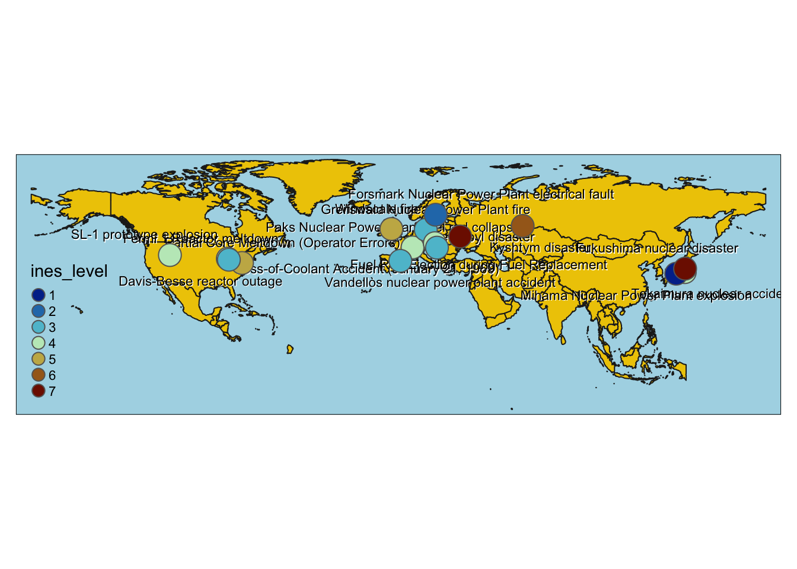

# Load libraries
library(here)
library(dplyr)
library(ggplot2)
library(janitor)
library(sf)
library(scico)
library(tmap)
library(rnaturalearth)
library(rnaturalearthdata)
library(leaflet.providers)
library(tmaptools)Assignment 3 (HW #3)
Nuclear Energy Infographic
Assigned Tue 02/11/2025 | Due Tue 02/25/2025
Questions
Which option do you plan to pursue? I plan to create an infographic, I have not changed my mind.
Restate your question(s). Has this changed at all since HW 1? If yes, how so? My main question is: “A History of Nuclear Accidents: Are costs of nuclear energy worth its benefits?”.
The main question has changed since HW1 because of the data available online. I initially wanted to answer an iteration of this question but specifically focused on non-financial costs of nuclear power. Subsequently, one of my data viz would summarize a post-Chernobyl human health study on thyroid cancer, but the data is not available to the public (since I can’t make a data viz about it, I will incorporate this information as annotations within the infographic instead). What is widely available (relatively) is data on soil, air and water concentrations of radionuclides in areas where major nuclear disasters have occurred.
Given the data that I’ve found, my 3 sub-questions will likely be: - How common are nuclear disasters? - How widespread and pervasive is soil contamination after a nuclear disaster? - What are the long-term effects of radiation exposure on wildlife?
I am having a hard time determining which variables I want to focus on because I keep rethinking my data viz choices!
Examples I am using as inspiration:
# paths
cooling_tower_path <- here("examples","cooling_tower.jpg")
france_path <- here("examples","france.png")
waste_path <- here("examples","waste.jpg")
knitr::include_graphics(cooling_tower_path)
knitr::include_graphics(waste_path)
knitr::include_graphics(france_path)
# load data
nuclear_accidents <- read.csv(here("data","nuclear_accidents_data.csv")) %>%
clean_names()
chernobyl_exposure <- read.csv(here("data","chernobyl_exposure_distance.csv")) %>%
clean_names()
world <- ne_countries(scale = "medium", returnclass = "sf") %>%
filter(continent %in% c("North America","Asia","Europe"))
relevant_countries <- world %>%
filter(name %in% c("United States of America","Russia","Ukraine","Germany","Switzerland","Czechia","Sweden","Japan","Hungary","France","Spain"))# reorder lat and long cols before st_as_sf transformation
nuclear_accidents <- nuclear_accidents %>%
relocate(longitude,latitude) %>%
filter(!is.na(ines_level)) # drop if ines_level = NA, means accident too small to have level assigned
# transform df to sf
nuclear_accidents_sf <- st_as_sf(nuclear_accidents, coords = c("longitude", "latitude"), crs = 4326)# testing a map as data viz
tmap_mode("plot") tmap mode set to plottingmap <-tm_shape(world) +
tm_polygons(col = "gold2",
border.col = "grey13",
popup.vars = NULL) +
tm_shape(nuclear_accidents_sf) +
tm_text("incident",
size = 0.7,
col = "black",
auto.placement = TRUE,
shadow = TRUE) +
tm_bubbles(size = 1,
col = "ines_level",
palette = rev(scico(n = 7, palette = "roma"))) +
tm_layout(bg.color = "lightblue")
map